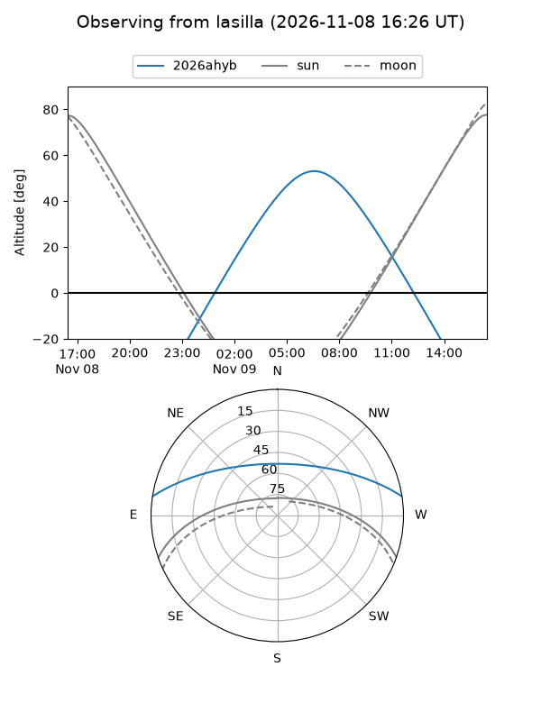
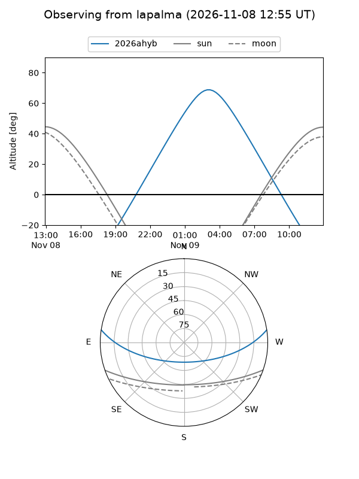
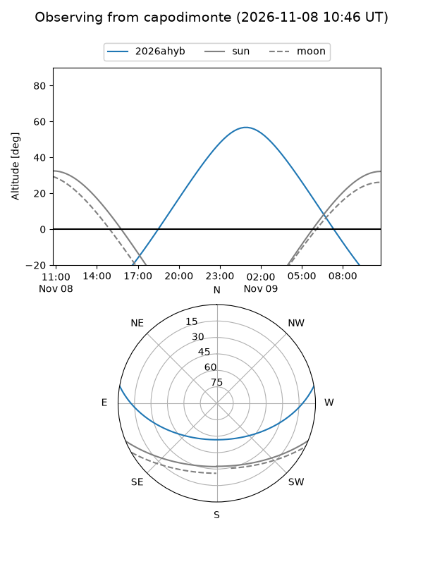
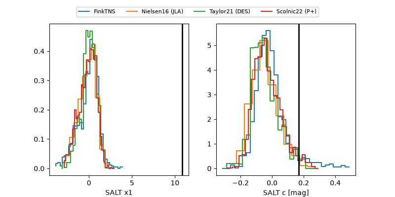

2026ahyb
Target 2026ahyb at 2026-11-08 10:19
Aliases and brokers:
FINK-ZTF: ztf.fink-portal.org/ZTF26aceioan
Lasair-ZTF: lasair-ztf.lsst.ac.uk/objects/ZTF26aceioan
ALeRCE-ZTF: alerce.online/object/ZTF26aceioan
YSE-PZ: ziggy.ucolick.org/yse/transient_detail/2026ahyb
TNS name: wis-tns.org/object/2026ahyb
Direct TNS query: direct search
alt names
ZTF26aceioan (ztf,fink_ztf)
2026ahyb (tns,yse)
Coordinates:
equatorial (ra, dec) = 75.7653,+7.55974
equatorial (HMS+DMS) = 05:03:03.67,+07:33:35.06
galactic (l, b) = (192.8317,-19.98882)
Flags:
peak dt: +10.2
Photometry:
last ztfg=19.94, ztfr=19.68
2 ztfg, 4 ztfr detections
Lightcurve
Visibility



Additional plots
